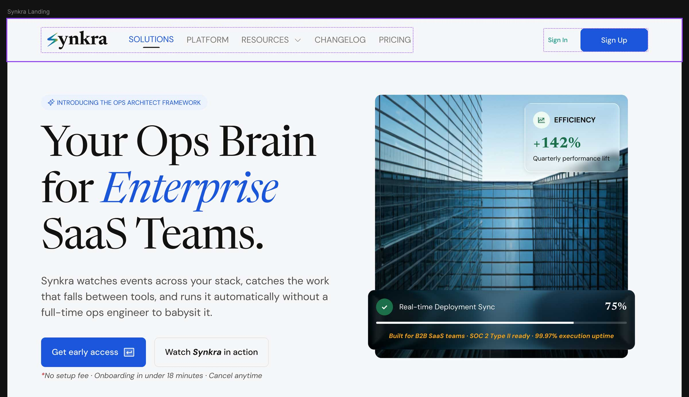
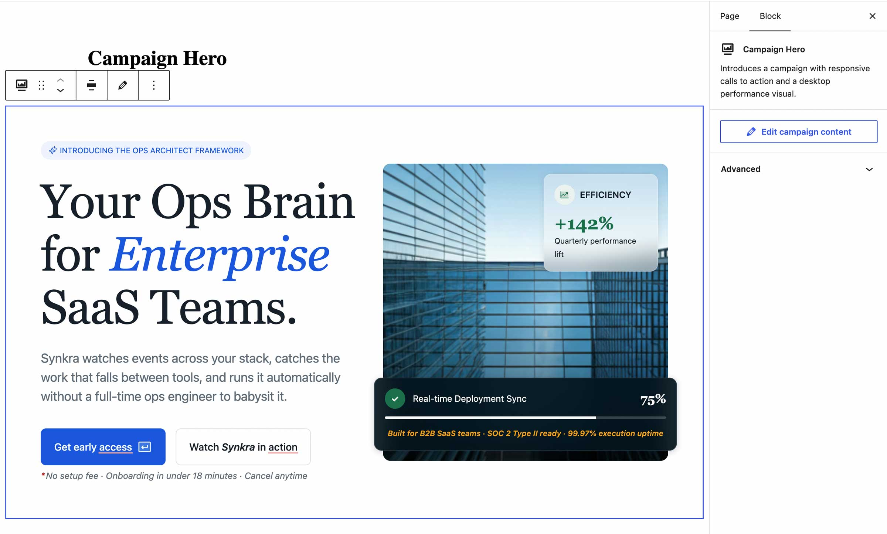
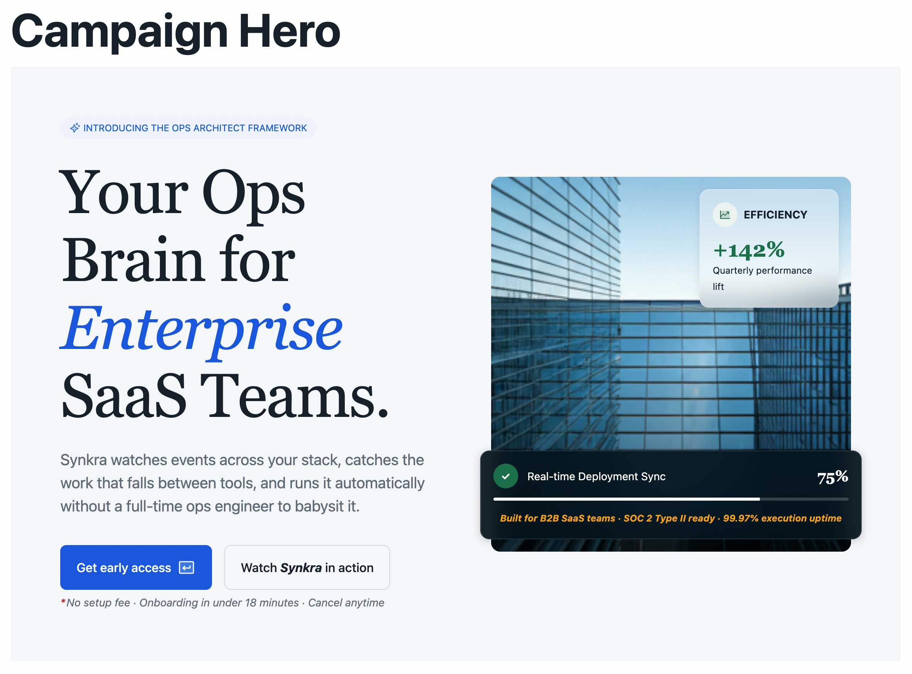
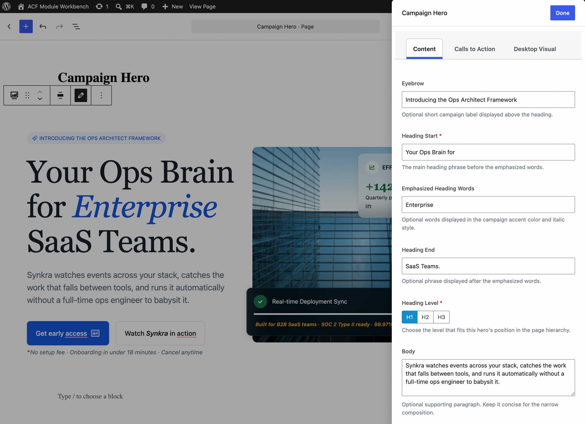
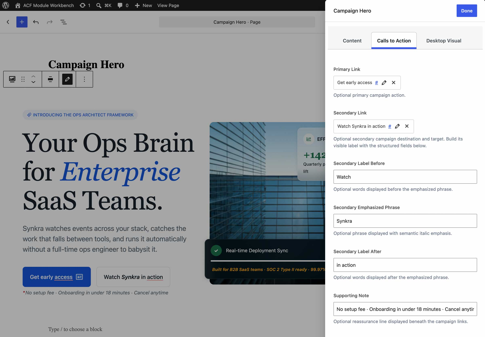
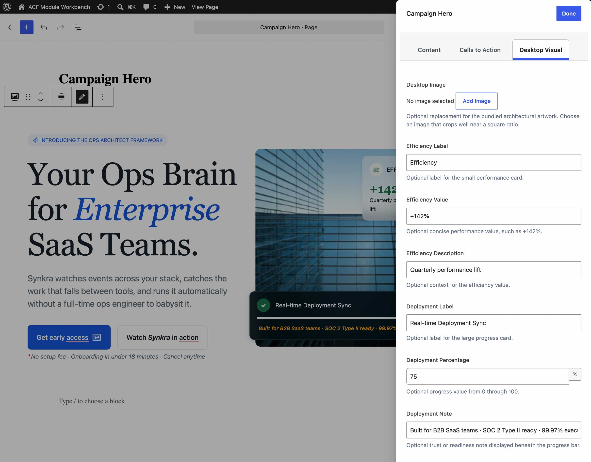

Editor
Meaningful choices
- Headings, supporting copy, and semantic heading level
- Link destinations and meaningful labels
- Optional imagery and structured performance data
- Approved variations and empty fields
Technical case study
A portable component system for WordPress projects that need a clear editing experience without giving up production-grade frontend control.
One design, one content model
The same Campaign Hero content moves from a supplied Figma frame, through a structured WordPress editing experience, to the rendered front end.

View full size (opens in a new tab)
View full size (opens in a new tab)
View full size (opens in a new tab)Inside the structured editor
The expanded editor temporarily covers part of the preview so fields can remain legible. The dimmed component behind it preserves context, and the tabs expose content choices without handing layout decisions to the editor.

View full size (opens in a new tab)
View full size (opens in a new tab)
View full size (opens in a new tab)The boundary is the product
Editor
Component
Implementation anatomy
Each module is a portable package with a documented content contract and deliberately small dependency surface.
block.json defines the WordPress block contract and assets.Production standards
Inspect the implementation
Review the component packages, ACF field definitions, technical specifications, and implementation decisions on GitHub.